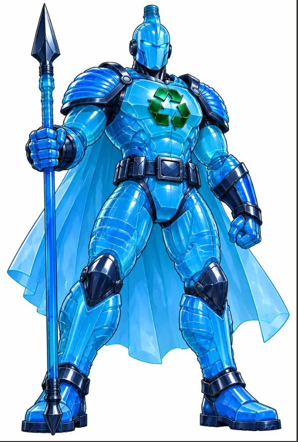
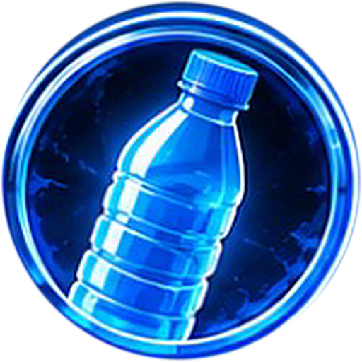

Guardianes del reciclaje

GUARDIANES DE ECOCYCLE
POLARIS
HÉROE DEL PLÁSTICO
Doy una segunda vida a lo que parece desechable.

MATERIAL PLÁSTICOLo que ganas por reciclar
Acciones que impactan tu vida y el planeta.
Registra rápido
Reporta el tipo y la cantidad de material reciclado en pocos pasos. Diseñado para ser muy fácil de usar.
Suma ecopuntos
Cada vez que registras tus materiales, alimentas tu puntaje y reflejas tu impacto genuino en el mundo.
Recibe beneficios
Reciclar ahora se traduce en recompensas tangibles, descuentos y beneficios en aliados de EcoCycle.
Mide tu impacto
Consulta estadísticas detalladas y entiende tu contribución a lo largo del tiempo de manera clara y directa.
¿Listo para darle valor a tu reciclaje?
Miles de personas ya están sacando provecho de separar y clasificar en casa. Sé parte de la iniciativa de ecología que te premia de verdad.
Así funciona EcoCycle
Prepara tus residuos
Clasifica plásticos, vidrio y cartón dejándolos limpios y secos desde casa.
Reporta el material
Ingresa la cantidad reciclada manualmente y de forma rápida en nuestra plataforma.
Acumula puntos
El sistema verificará tu acción y te asignará ecopuntos según el tipo de material.
Gana beneficios
Desbloquea descuentos exclusivos, premios o reconocimientos gracias a tu constancia.
Lo que hace valiosa esta experiencia
EcoCycle nace para convertir el reciclaje en una acción más clara, motivante y beneficiosa para todos.
"EcoCycle transforma una acción cotidiana en una experiencia con propósito, seguimiento y valor real."
Impacto sostenible
Propuesta centrada en hábitos responsables"La combinación entre ecopuntos, beneficios y trazabilidad hace que reciclar se sienta más útil y constante."
Motivación real
Experiencia pensada para mantener el compromiso"Más que registrar materiales, EcoCycle ayuda a visualizar el impacto positivo de cada acción en el tiempo."
Impacto visible
Medición clara del aporte de cada usuarioPreguntas Frecuentes
Resolvemos las dudas más comunes de nuestra comunidad.
Conoce más sobre EcoCycle
Déjanos tus datos en nuestro formulario oficial de HubSpot para conocer el proyecto y recibir información.
- Proceso seguro y confiable
- Sin compromisos escondidos
- 100% gratuito siempre
No dejes pasar esta oportunidad
Cada día que no reciclas es una oportunidad perdida para el planeta y para ganar beneficios. Da el primer paso hoy y empieza a transformar tu impacto.
Quiero conocer más